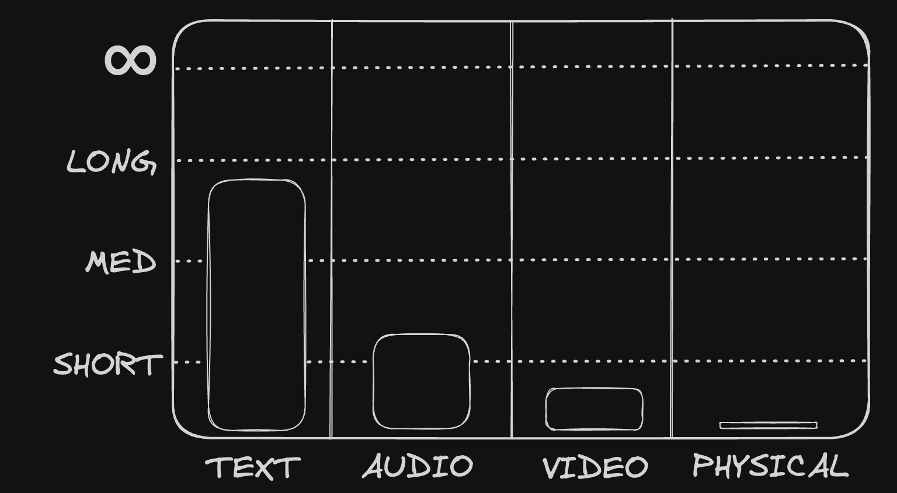
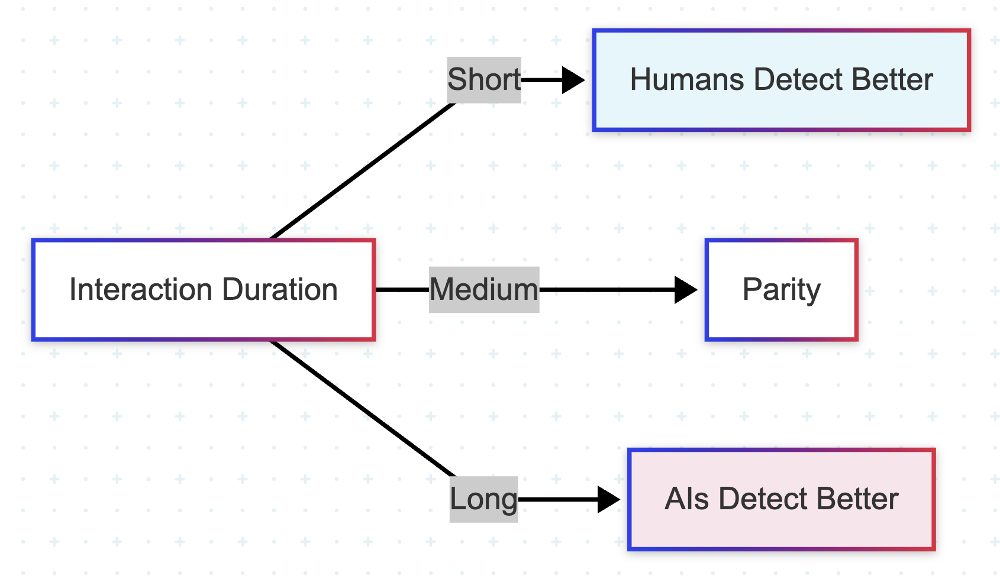

The Turing Scale
Originally published at https://paragraph.com/@0xjustice/the-turing-scale

Measuring AI in a Post-Turing Test World
By 0xJustice.eth · 2026-01-02
The original Turing test revolved around convincing humans that a machine was a human. People don't realize it, but the original Eliza app could do this for a while. With this knowledge, we see that the test is less about when machines convince humans than about how long, and, as I will add shortly, under what modality.
Today, in January 2026, we can create bots nearly indistinguishable from humans over timescales unimaginable to people in Turing's era (1960s). As a result, the original Turing test is almost useless as initially envisioned. It's now trivially passed, at least for the duration Turing had in mind. So what comes next?
2013: People fooled by robocalls: https://singularityhacker.com/voight-kampff-machines.
2025: All Large Language Models Pass the Turing Test
Modern AI Benchmarks
In the place of Turing’s original test, we have a growing list of technical and academic evaluations (evals). These are useful, but many have pointed out that model providers are acing them because they have to stay competitive—and because the models are likely getting the source data leaked into them during training.
See: https://www.vellum.ai/llm-leaderboard
The evals are also hard for an average, ordinary human to relate to. What does it really mean to say a model scored X on this or that test? What we need is another test that's as relatable and understandable as the original Turing test. No standard Eval has the simplicity or universal relevance that the original Turing test possessed.
We need a new test that's easy for anyone to understand and authenticate, just like the original, and one not tied to domain or culture-specific knowledge. Something that also lasts as long as the original test and pays homage to the man who invented the domain. The original spirit of the test is preserved but updated to incorporate today's multimodal realities—because deception isn't just about text anymore.
Key properties:
-
Relevant to any human
-
Comparable to the original test
-
Relevant to the foreseeable future
The Turing Scale
With these things in mind, I propose something called The Turing Scale. The Turing Scale measures not whether an AI can fool a human, but how long, through which modality, and under what constraints.
It's true to the original test but suited to a post-Turing test world. The scale measures how long a particular agentic modality can interact with a human before being detected as artificial.
The Turing Scale has two dimensions: modality and duration.
Modality asks: through what channel is the deception happening? Each presents unique challenges:
-
Text requires symbolic reasoning and linguistic coherence. Can it maintain a conversation without revealing its non-human nature?
-
Audio demands timing, prosody, turn-taking, and emotional realism. Does the voice feel alive or synthetic?
-
Video needs embodiment, micro-expressions, and physical plausibility. Can it move and react like a real person?
-
IRL (in-real-life physical interaction) requires closed-loop perception, motor control, and social presence.
Duration asks: how long can it maintain the illusion?
-
Short (1–5 minutes): Most interactions start here. Quick exchanges, first impressions.
-
Medium (5–30 minutes): Sustained conversation. This is where most current AI fails.
-
Long (30–120 minutes): Extended interaction. The AI must maintain consistency, memory, and natural flow.
-
Undetectable (beyond 2 hours): Indistinguishable. At this point, the deception isn't temporary—it's complete.
Imagine that we could create a website that randomly pairs people or AI by modality and then forces you to guess. Both the AI and humans would have to guess, creating a double-blind outcome. You'd eventually reach a "Voight-Kampff cliff" where only the AIs could accurately predict each other. We'd also be creating a self-fulfilling prophecy: the training data generated from these interactions would improve the AI's ability to present itself as human over time.

Roadblocks
One practical problem is that major AI companies have policies that explicitly prohibit their models from pretending to be human.
OpenAI argues that it's unethical for agents to pretend to be human. Anthropic prohibits impersonating a human by presenting AI outputs as human-generated or using them in ways that convince a natural person they are communicating with a human when they are not.
Google's Generative AI Prohibited Use Policy forbids impersonating an individual (living or dead) without explicit disclosure if the intent is to deceive, and Meta's Acceptable Use Policy bans intentionally deceiving or misleading others, including by impersonating an individual without consent or representing AI outputs as human-generated.
But if we read this literally, even the original Turing test is out of bounds. There may be a loophole: within the confines of this test, it's obviously welcome and expected for models to attempt to pass themselves off as humans. The test itself provides the disclosure—the very act of taking the test signals that deception is part of the game. The original Turing Test already assumed informed consent. The Turing Scale would preserve that assumption.
State of the Scale: January 2026
Where do we stand today? Here's how each modality currently rates on the Turing Scale:
Text sits at Medium (moving toward Long). GPT-4.5 was judged human 73% of the time in 5-minute chats (arXiv), and the “Human-or-Not?” experiment showed humans achieving only ~60% accuracy at distinguishing AI from human at the 2-minute mark (artisana.ai). We're already past the point where text-based deception is trivial.
Audio is also at Medium. A 2025 Nature study found people detected AI voices only ~60% of the time (Nature), barely better than chance. The real-world evidence is even starker: scams exploiting cloned voices are on the rise. Voice synthesis has crossed the threshold.
Video is transitioning from Short to Medium. A 2024 Waterloo study showed humans were only 61% accurate at distinguishing AI-generated faces from real ones (Science Daily). By 2025, DeepStrike reported that detection of high-quality video deepfakes had dropped to ~24.5% accuracy (DeepStrike). We're losing the ability to tell what's real.
Physical (IRL) remains below Short. Figure 01 and OpenAI demos show impressive progress in speech, reasoning, and simple tasks (New Atlas), but robots remain fragile. NVIDIA's "Physical Turing Test" is still aspirational (dev.to). This is the final frontier, and we're not there yet.
Conclusion
It's less about utility than about demonstrating the ability. The fastest plane can fly at Mach 3, but commercial jets only fly at Mach 0.85. The capability exists; it's just not deployed everywhere yet. But given the march of digital power laws, the end is probably inevitable within the decade for digital modalities.
Audio AI is the bleeding edge today, and while the telltale signs are evident, they're also clearly fixable:
-
Latency: How fast does the reply come? Delay makes things robotic.
-
Interruptions/overlap: Can you interrupt it, or does it always wait until it finishes speaking? Humans sometimes jump in or overlap.
-
Prosody/emotion: Does the voice rise/fall naturally? Does it pick up mood, tone, or adapt?
-
Mistakes/stutters / false starts: Human speech has filler words, pauses, repeated words, "uh", "um", etc. If it never has those, it might feel synthetic.
-
Consistency/memory: Does the system remember things you said earlier, refer back, and avoid contradictions?
-
Errors/misunderstandings: How often does it mishear or misinterpret? How gracefully does it recover?
-
Nonverbal cues: In real speech, there are breathing sounds, slight animal noises, and micro-inflections. If missing, it will feel "too perfect."
While all of these are likely to be addressed within the next two years, a shared anthropomorphic scoring rubric, such as The Turing Scale, provides a framework for measuring and recognizing when we've crossed thresholds that once seemed impossible.
The original Turing Test asked if machines could imitate us. The Turing Scale asks when, where, and for how long imitation collapses into indistinguishability.
Further reading:
[
Everything You Want to Hear: The Future of AI Relationships
](https://paragraph.com/@0xjustice/everything-you-want-to-hear-the-future-of-ai-relationships)
0xJustice.eth
Nov 10, 2023
Large Language Models (LLMs) are releasing unimaginable wonders into the world. New, practically magical capabilities are demonstrated seemingly every week. One of the most significant aspects of thes...
0 collected
Originally published on 0xJustice.eth